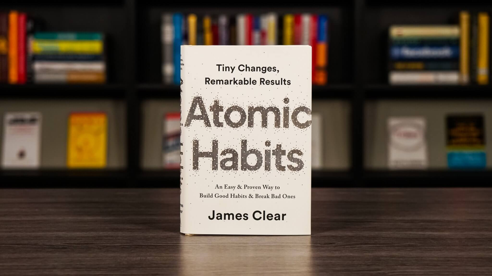

Atomic Habits: An Easy & Proven Way to Build Good Habits & Break Bad Ones by James Clear
A NEW YORK TIMES AND SUNDAY TIMES BESTSELLER
The book is about...
Transform your life with tiny changes in behaviour, starting now. People think that when you want to change your life, you need to think big. But world-renowned habits expert James Clear has discovered another way. He knows that real change comes from the compound effect of hundreds of small decisions: doing two push-ups a day, waking up five minutes early, or holding a single short phone call. He calls them atomic habits. In this ground-breaking book, Clears reveals exactly how these minuscule changes can grow into such life-altering outcomes. He uncovers a handful of simple life hacks (the forgotten art of Habit Stacking, the unexpected power of the Two Minute Rule, or the trick to entering the Goldilocks Zone), and delves into cutting-edge psychology and neuroscience to explain why they matter. Along the way, he tells inspiring stories of Olympic gold medalists, leading CEOs, and distinguished scientists who have used the science of tiny habits to stay productive, motivated, and happy. These small changes will have a revolutionary effect on your career, your relationships, and your life. Source: Amazon books
